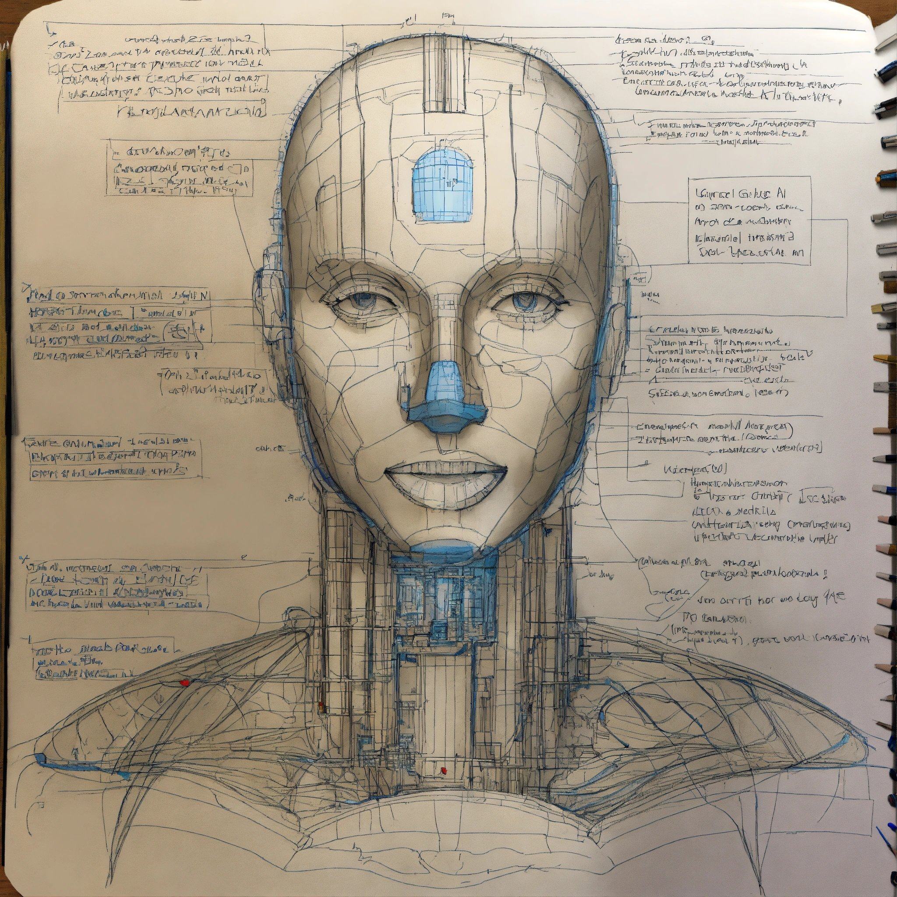
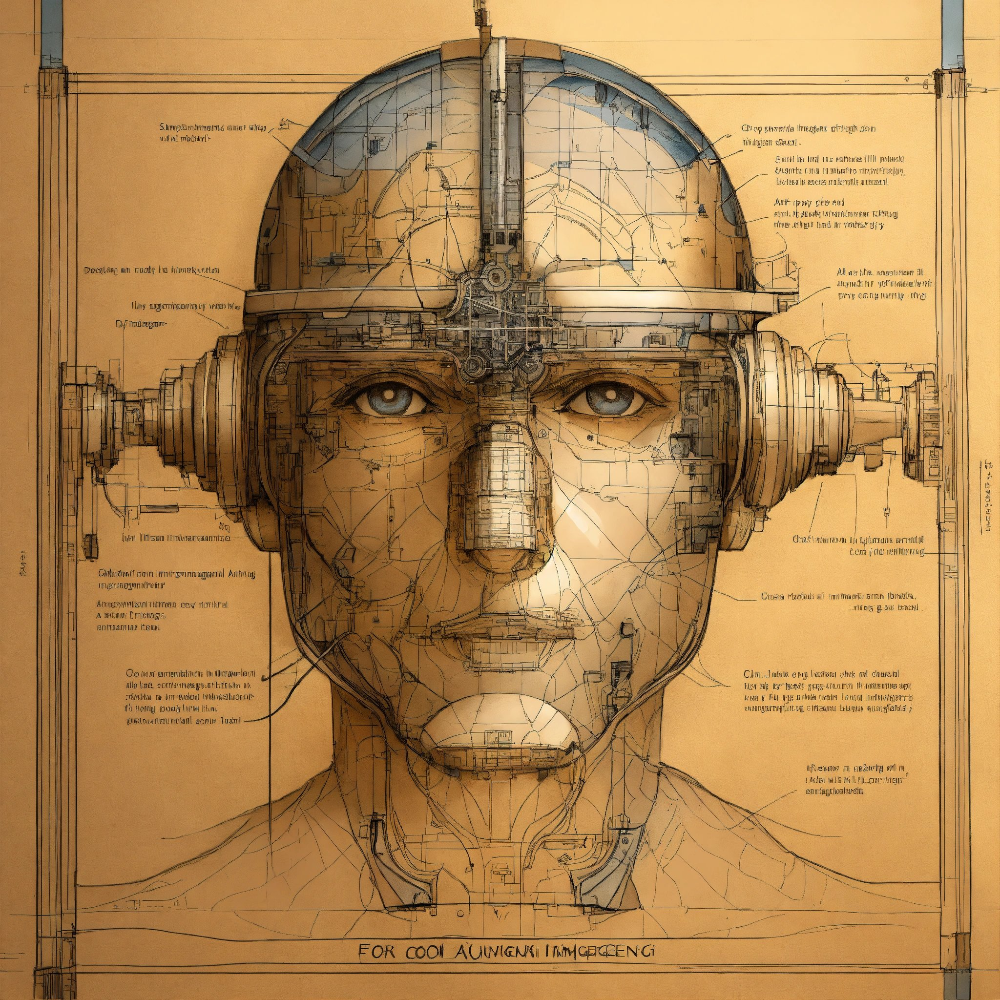
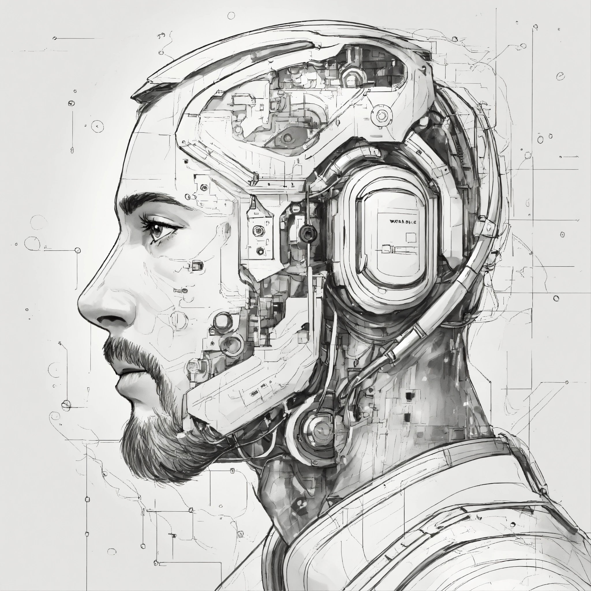
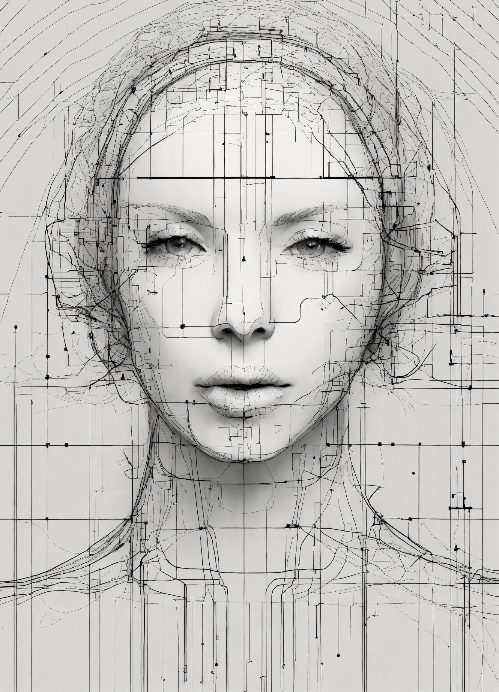

Dibujos de Inteligencia Artificial
   La inteligencia artificial (IA) está transformando la forma en que creamos arte, incluyendo el mundo de los dibujos y las ilustraciones. Los avances en algoritmos de IA han permitido la creación de imágenes realistas y sorprendentes, generadas completamente por computadora.
Una de las técnicas más comunes utilizadas para generar dibujos con IA es el uso de redes neuronales generativas adversarias (GANs). Estos modelos de IA están diseñados para aprender patrones en conjuntos de datos de imágenes y generar nuevas imágenes que son indistinguibles de las reales.
Además de las GANs, también existen otros enfoques y técnicas para la generación de imágenes con IA, como las redes neuronales convolucionales (CNNs) y los modelos de transformadores. Estos modelos pueden utilizarse para crear una amplia variedad de imágenes, desde retratos realistas hasta paisajes abstractos.
La aplicación de la IA en la creación de dibujos tiene numerosas aplicaciones en el arte y el diseño. Los artistas y diseñadores pueden utilizar herramientas y software basados en IA para explorar nuevas formas de expresión artística y experimentar con estilos y técnicas que de otra manera serían difíciles de lograr.
Sin embargo, la creación de dibujos con IA también plantea una serie de consideraciones éticas y artísticas. ¿Es el arte generado por IA realmente creativo? ¿Qué papel juega el artista en el proceso de creación? Estas son preguntas importantes que los artistas y la sociedad en general están empezando a abordar.
En resumen, los dibujos generados por inteligencia artificial representan una emocionante convergencia entre el arte y la tecnología. A medida que la IA continúa evolucionando, es probable que veamos aún más innovaciones en el mundo del arte digital, desafiando nuestras percepciones tradicionales de lo que es posible crear.